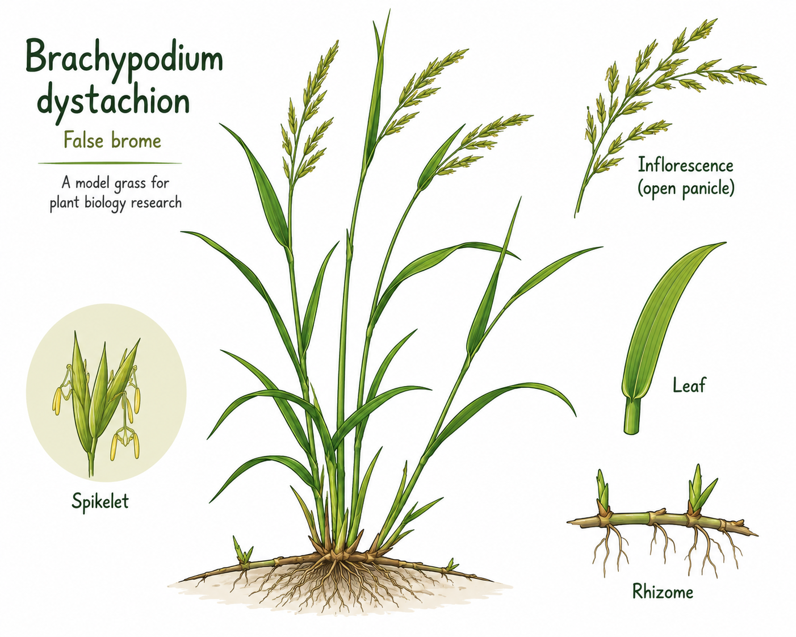
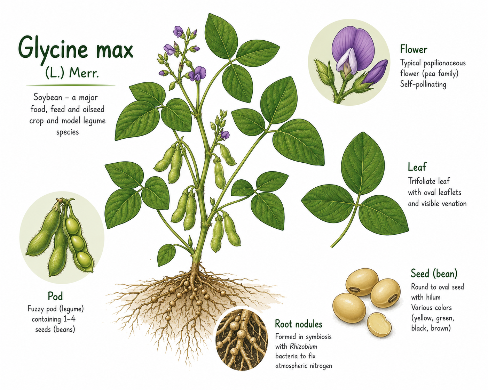
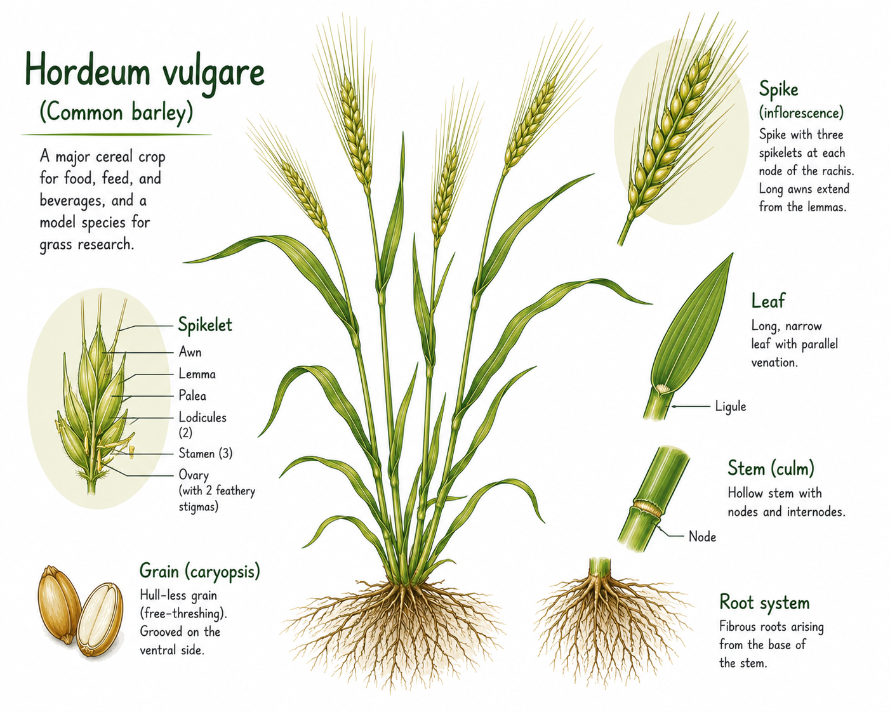

We're attempting to include each SRA project as a bundle in DEE2. So far we have included >60k SRA projects and this grows each month. Each SRA project has one or more runs, as you can see there are over 4.4 Million in SRA. Overall we have completed 46% of these as of July 2026 and our servers are working hard to deliver more.
Learn more about the organisms in our collection
Source: Wikipedia.
-
Brachypodium dystachion

B. distachyon, commonly called purple false brome or stiff brome, is a grass species native to southern Europe, northern Africa and southwestern Asia east to India. It is related to the major cereal grain species wheat, barley, oats, maize, rice, rye, sorghum, and millet. It has many qualities that make it an excellent model organism for functional genomics research in temperate grasses, cereals, and dedicated biofuel crops such as switchgrass. These attributes include small genome (~270 Mbp) diploid accessions, a series of polyploid accessions, a small physical stature, self-fertility, a short lifecycle, simple growth requirements, and an efficient transformation system. The genome of Brachypodium distachyon (diploid inbred line Bd21) has been sequenced and published in Nature in 2010.
-
Glycine max

The soybean, soy bean, or soya bean (Glycine max) is a species of legume native to East Asia, widely grown for its edible bean. Soy is a staple crop, the world's most grown legume, and an important animal feed.
Soy is a key source of food, useful both for its protein and oil content. Soybean oil is widely used in cooking, as well as in industry. Traditional unfermented food uses of soybeans include edamame, as well as soy milk, from which tofu and tofu skin are made. Fermented soy foods include soy sauce, fermented bean paste, nattō, and tempeh. Fat-free (defatted) soybean meal is a significant and cheap source of protein for animal feeds and many packaged meals. For example, soybean products, such as textured vegetable protein (TVP), are ingredients in many meat and dairy substitutes. Soy-based foods are traditionally associated with East Asian cuisines, and still constitute a major part of East Asian diets, but processed soy products are increasingly used in Western cuisines.
Soy was domesticated from the wild soybean (Glycine soja) in north-central China between 6,000 and 9,000 years ago. Brazil and the United States lead the world in modern soy production. The majority of soybeans are genetically modified, usually for either insect, herbicide, or drought resistance. Three-quarters of soy is used to feed livestock, which in turn go to feed humans. Increasing demand for meat has substantially increased soy production since the 1980s, and contributed to deforestation in the Amazon.
Soybeans contain significant amounts of phytic acid, dietary minerals and B vitamins. Soy may reduce the risk of cancer and heart disease. Some people are allergic to soy. Soy is a complete protein and therefore important in the diets of many vegetarians and vegans.
-
Hordeum vulgare

Barley (Hordeum vulgare), a member of the grass family, is a major cereal grain grown in temperate climates globally. One of the first cultivated grains, it was domesticated in the Fertile Crescent around 9000 BC, giving it nonshattering spikelets and making it much easier to harvest. Its use then spread throughout Eurasia by 2000 BC. Barley prefers relatively low temperatures and well-drained soil to grow. It is relatively tolerant of drought and soil salinity, but is less winter-hardy than wheat or rye.
In 2023, barley was fourth among grains in quantity produced, 146 million tonnes, behind maize, rice, and wheat. Globally, 70% of barley production is used as animal feed, while 30% is used as a source of fermentable material for beer, or further distilled into whisky, and as a component of various foods. It is used in soups and stews and in barley bread of various cultures. Barley grains are commonly made into malt using a traditional and ancient method of preparation. In English folklore, John Barleycorn personifies the grain and the alcoholic beverages made from it. English pub names such as The Barley Mow allude to its role in the production of beer.